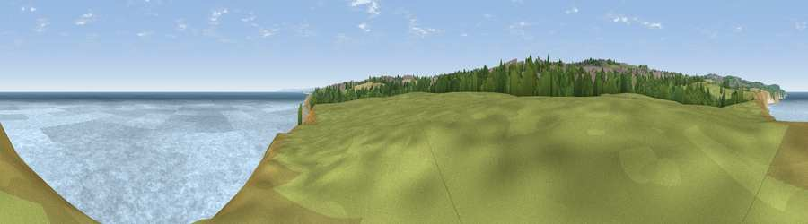

Viewpoint near Horden
#11828 in England · top 27% of its area beats it · near Horden · footpathWhere it is
The exact computed spot (NZ 45125 41275). Click the marker for map links.
Public access: a public right of way passes within 7 m of this spot. Computed from Natural England's CRoW access layer and OpenStreetMap rights of way — not the legal definitive map. Always verify locally.
The view, rendered

A 360° render of this exact spot computed from the terrain model, tree cover and land cover — summer colours, afternoon light, calibrated against photographs of famous viewpoints. Real trees, hedges and buildings will differ in detail.
The panorama
Grey silhouette: terrain skyline in each direction (720 bearings, Earth curvature and refraction included). Dashed green: skyline with trees (+15 m) and buildings (+8 m) as obstacles. Blue strip: how far the ground is visible on each bearing.
Where the view opens
Wedge length = distance to the farthest visible ground on that bearing (vegetation-aware). Rings at 10, 25 and 50 km.
What fills the view
61% water · 16% bare ground · 12% grassland · 4% built-up · 4% woodland · 2% cropland
Angular shares of the visible panorama (visual magnitude), not map area. Landscape diversity 0.52 (0–1 Shannon).
Key numbers
More beautiful places nearby
The staircase of upgrades: each row has a higher view potential than everything closer. Driving times are estimates from straight-line distance, calibrated against real road routing — check an actual route before setting out.
| Place | Direction | Drive | Score |
|---|---|---|---|
| Viewpoint near Horden | NNW · 1 km | ~2 min | 64.0 |
| Viewpoint near Easington Colliery | NNW · 3 km | ~7 min | 69.4 |
| Viewpoint near Easington Colliery | NNW · 4 km | ~10 min | 74.4 |
| Viewpoint near Houghton-le-Spring | NW · 12 km | ~22 min | 76.0 |
| Viewpoint near Lazenby | SSE · 26 km | ~42 min | 86.4 |
| Warsett Hill | SE · 31 km | ~48 min | 86.8 |
| Viewpoint near Easington | SE · 36 km | ~55 min | 90.2 |
| The Knoll | SSW · 462 km | ~430 min | 91.0 |
54.76439, -1.30022 · source: screening · position refined by local search. Computed location — check access rights before visiting.